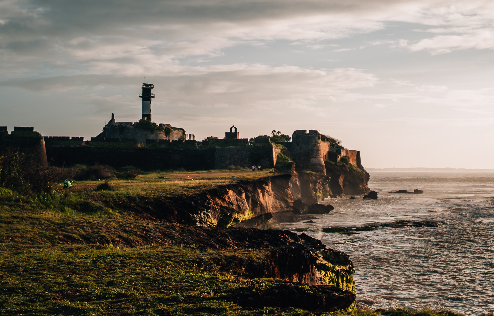
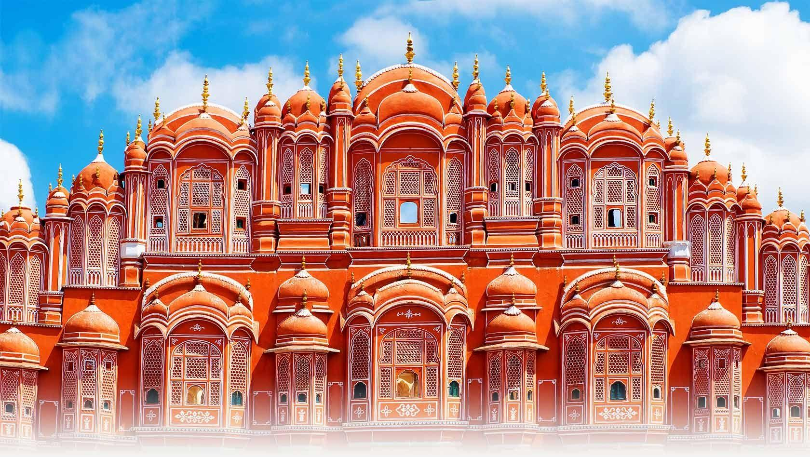

Jodhpur - The historical place.

Jodhpur, city, central Rajasthan state, northwestern India. It is situated just northwest of the Luni River on a sterile tract of land covered with high sand hills. The region is sometimes referred to as Marwar (derived from maru-war [“region of death”] because of the area’s harsh desert conditions). Its north and northwest areas form part of the Thar (Great Indian) Desert. It has appropriately been quoted by Theodore Roosevelt that 'the more you know about the past, the better prepared you are for the future.' Let us begin discussing this vast topic with the Sun City, i.e. Jodhpur.
Top places in Jodhpur to visit.

1. Mehrangarh Fort, Jodhpur :
Mehrangarh Fort, Jodhpur
Sitting atop a 400-feet-high hill, the beautiful Mehrangarh Fort commands the landscape of Jodhpur with its architectural brilliance and grandeur. The foundation stone of this majestic fort was laid by Rao Jodha in the mid-15th century. Built over a period of 500 years, the fort bears testimony to the glorious era of the erstwhile ruling dynasty, and houses possibly the best museum in Rajasthan displaying paintings, arms and armoury, textiles, decorative arts and other prized exhibits. Sheesh Mahal, Phool Mahal and Moti Mahal are some prominent palaces inside the fort, which would transport you into a different era altogether.
Timings: 9:00 am – 5:00 pm
Entry Fee: ₹ 50 – ₹ 100 for Indians, ₹ 600 for Foreign Tourists
Travel Tip: Try zip-lining at the fort to enjoy the most enchanting views of the Blue City!
2. Jaswant Thada, Jodhpur :
Jaswant Thada, Jodhpur
Another brilliant example of India’s architectural wonders, Jaswant Thada sits beside a lake just a little away from the Mehrangarh Fort. This white marble monument, built in the 19th century, commemorates the memory of Maharaja Jaswant Singh II who once ruled the city. You must visit this place in Jodhpur for its enchanting beauty, peaceful surroundings, scenic vistas, and for its extensive collection of paintings and portraits of Jodhpur rulers.
Timings: 9:00 am – 5:00 pm
Entry Fee: ₹ 30 for Indians, ₹ 50 for Foreign Tourists
3. Umaid Bhawan Palace, Jodhpur :
Umaid Bhawan Palace, Jodhpur
Your trip to Jodhpur would be incomplete without visiting the grand Umaid Bhawan Palace. Built in 1929 by Maharaja Umaid Singh, this palace is one of the largest private residences in the world. It currently houses the royal residence, a luxury hotel and a family museum – the only part of the palace accessible to general public. The extensive collection of memorabilia at the museum will take you through the fascinating 20th century history of Jodhpur kings.
Timings: 9:00 am – 5:00 pm; Closed on Sundays
Entry Fee: ₹ 30 per Adult and ₹ 10 per Child for Indians, ₹ 100 for Foreign Tourists
4. Balsamand Lake, Jodhpur :
Balsamand Lake, Jodhpur
Situated on the Jodhpur-Mandore Road, Balsamand Lake is yet another popular attraction in the city. Built in 1159 AD to serve as a water reservoir, this artificial lake is visited by tourists and locals alike for its lush green surroundings and charming natural beauty, which makes a perfect setting for picnics. If you are lucky, you might even spot a peacock here!
4. Balsamand Lake, Jodhpur :
Balsamand Lake, Jodhpur
Situated on the Jodhpur-Mandore Road, Balsamand Lake is yet another popular attraction in the city. Built in 1159 AD to serve as a water reservoir, this artificial lake is visited by tourists and locals alike for its lush green surroundings and charming natural beauty, which makes a perfect setting for picnics. If you are lucky, you might even spot a peacock here!
5. Kailana Lake, Jodhpur :
Another great spot to enjoy picnics, Kailana Lake was constructed in 1872 by Pratap Singh to serve as a water source for Jodhpur and its surrounding areas. Owing to its scenic beauty, a number of people come to this artificial lake to seek respite from the hubbub of the city. It is also a popular place for birdwatching, boating, and for viewing the most ethereal sunsets.
6. Machiya Safari Park, Jodhpur :
Machiya Safari Park, Jodhpur
Not very far from Kailana Lake is the Machiya Safari Park, a must-visit place for birdwatchers and wildlife enthusiasts. You can spot several animals in their natural habitat here including desert fox, wild cat, deer, monitor lizard and blue bull. There is also an assigned point where many exotic birds can be spotted, especially during winters. This is not all! The views of the sunset and sunrise from atop the fort inside the park are not to be missed.
Timings: 8:30 am – 5:00 pm (October-March); 8:00 am – 6:00 pm (April-September); Closed on Tuesdays
Entry Fee: ₹ 15 – ₹ 30 for Indians, ₹ 300 for Foreign Tourists
7. Rao Jodha Desert Rock Park, Jodhpur :
Rao Jodha Desert Rock Park, Jodhpur
A walking trail through the Rao Jodha Desert Rock Park will give you an insight into the plant life of the rocky trails of Rajasthan. Spread over 170-acre area, this park was built in 2006 in an effort to restore the ecology of the wetland surrounding the iconic Mehrangarh Fort. You can spot some unique forms of cactus here along with several other floral species.
Timings: 8:00 am – 5:30 pm (October-March); 7:00 am – 6:30 pm (April-September)
Entry Fee: ₹ 100